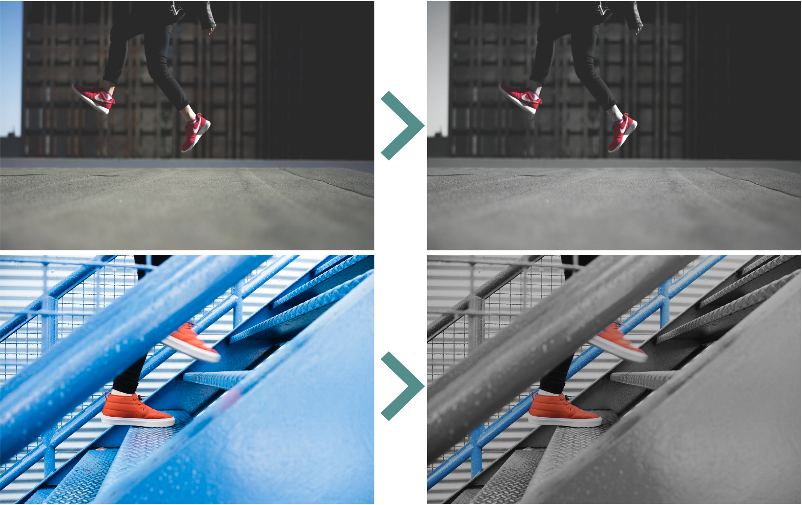
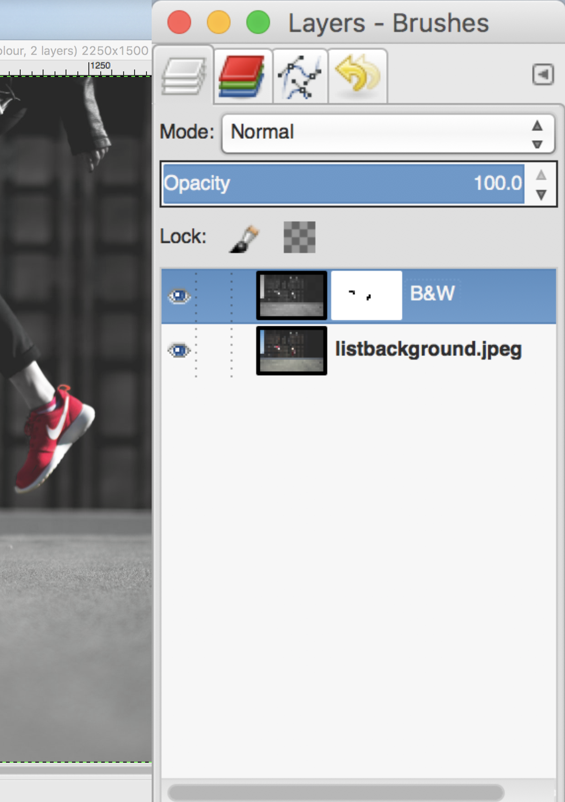

Candidate Number: 45625, 45476
Firstly, please clear the cookie for https://localhost:8080, since we use cookie in our design. Secondly, please start our page from https://localhost:8080.
Our website is developed from scratch by employing the information from the course notes to learn more and fully understand about the web development. Our server, database, ranking system, dynamic pages, HTML, CSS, JS, design works are all made by ourselves without using any framework or template. Firstly, details and grades of each part are briefly described as below. Evidences of this mark will be proved following chapters.
'@font-face'. (We found that setting
'format("otf")' is important!)
'/public/picker_script.js',
canvas and event handlers are employed to express an interactive effect according to mouse clicking. Since Our structure is quite complicated, we will briefly introduce each file used for realising each page with the examples of web pages.
The first page is '/public/index.html' to make users give their preference information.
To make it interactive, the moving dot effect is invented from scratch. The details about this effect will be
explained in "Development Stages and Points". After submitting the result, the main page will be shown
according to choices. This choice
information is received as binary and the server starts to calculate the similarity between the user preference
and each video's label data. According to this calculation, the main page is generated. If a user visits again,
she/he could click "continue" and it uses the same preference information by employing cookie data.
These interactive effect and cookie are realised by '/public/picker_script.js' and
'/public/picker_style.css'.
Especially for cookie, it goes to the server after receiving from '/public/picker_script.js'.
The main page mainly comes from 'videomain.html', '/public/style.css' and
'/public/video_script.js'. To embed
videos by directly calling from the database, firstly insert videos with JavaScript and fetch these data in
'server.js' by employing the abbreviated template, 'videomain.html'.
This process will be described in the next
chapter. In this page, page goes through to videos if the curve arrow button clicked.
'/public/video_script.js'
is used for this effect. A user could hover a mouse on thumbnails and it shows the play button. After this
button is clicked, the page is changed to the individual video page. Moreover, the user history by deploying
cookie data could be shown if 'Watch History' button is clicked.
This page is for actually playing the chosen video and showing related videos, the playlist. This playlist employs the same function of the similarity calculation as the main page videos' one, ten videos similar to the current video are displayed in the transparent scroll box. If a user clicks one of the playlist videos, that video becomes the individual video and another playlist is shown again.
Our team started the development from the server, database, and dynamic pages. We thought that this back-end side is most tricky while we could learn many things from setting server and dynamic pages without using any framework, only by deploying course note information. We relied on the 'integration' video and other course notes since there is not much information about server and dynamic pages excluding frameworks.
Starting from 'pet.html' of the integration video, we found that it is imperative to exploit 'html template' to
flexibly call data from the database. It was really challenging to understand this process, try our own templates,
and apply to the server. We firstly tried to make the whole html page, not the abbreviated form, and see the result.
After that, we removed repetitive parts and made them DRY. The part of the html template of the main page is
as below. (All is made by ourselves)
"videomain.html"
<a id="anchor"> </a>
<div class="container" id = "start">
$<div class="row">
<div class="col-sm-4">
<a href="../video.html?id=$">
<img src="http://i.ytimg.com/vi/$/maxresdefault.jpg" alt="" class="image"/>
</a >
<div class="middle">
<a href="../video.html?id=$" class="play"></a >
</div>
<h6></h6>
<div class="title">
<p>$</p >
</div>
<div class="subinfo">
<p>$<br/>$ views<br/>$</p>
</div>
</div>
<div class="col-sm-4">
<a href="../video.html?id=$">
<img src="http://i.ytimg.com/vi/$/maxresdefault.jpg" alt="" class="image"/>
</a >
<div class="middle">
<a href="../video.html?id=$" class="play"></a>
</div>
<h6></h6>
<div class="title">
<p>$</p >
</div>
<div class="subinfo">
<p>$<br/>$ views<br/>$</p>
</div>
</div>
<div class="col-sm-4">
<a href="../video.html?id=$">
<img src="http://i.ytimg.com/vi/$/maxresdefault.jpg" alt="" class="image"/>
</a >
<div class="middle">
<a href="../video.html?id=$" class="play"></a>
</div>
<h6></h6>
<div class="title">
<p>$</p >
</div>
<div class="subinfo">
<p>$<br/>$ views<br/>$</p>
</div>
</div>
</div>$
</div>
</body>
To insert data from database into '$', the server reads 'videomain.html', parses the text with '$',
calls the data
by using 'prepare' statement, calculate similarity of videos to a user preference, and insert them into the HTML
template. To make the insert loop here, check if each video's column is the first, second, or third row and attach
different HTML parts according to its position. The 'deliver' with response is called inside the last function
since 'ps.each' could not preserve the data outside the loop.
"server.js"
function getMain(response, preIndex) {
fs.readFile("./videomain.html", ready);
function ready(err, content) {
getMainData(content, response, preIndex);
}
}
function getMainData(text, response, preIndex) {
var page='';
text = text+'';
var parts = text.split("$");
var end = parts[23];
var ps = db.prepare("select * from Videos");
page = page + parts[0];
//18 containers
var videoLib = new Array(18);
for (var i = 0; i < 18 ; i++) {
videoLib[i] = new Array(0);
}
var counter = 0;
ps.each(function ready(err, obj) {
var similarIndex = similarity(preIndex, parseInt(obj.labels));
if (similarIndex != 0) {
videoLib[similarIndex].push(obj);
}
counter++;
//2056 is database size
if (counter === 2056) {
var dbpos = 0;
for (var q = 17; q > 0; q-- ) {
for (var r = 0; r < videoLib[q].length; r++) {
page = prepareMain(videoLib[q][r], page, parts, response, dbpos, end, 101);
dbpos++;
}
}
}
});
}
function prepareMain(data, page, parts, response, dbpos, end, videoNum) {
var pos = (dbpos % 3 == 1) ? 8 : (dbpos % 3 == 2) ? 15 : 1;
page = page + parts[pos] + data.id + parts[pos+1] + data.id + parts[pos+2] +
data.id + parts[pos+3] + data.title.replace("& ", "& ") + parts[pos+4] +
data.owner.replace("& ", "& ") + parts[pos+5] + data.view + parts[pos+6] + data.created;
if (dbpos %3 === 2) {
page = page + parts[22];
}
if(dbpos === videoNum) {
if (dbpos % 3 === 0 || dbpos % 3 === 1) {
page = page + parts[22];
}
page = page + end;
deliver(response, "application/xhtml+xml", null, page);
}
return page;
}
The individual video page is also made from the same method, but different details. Another point is making the database. We primarily processed the video and label data from Google into CSV format (by deploying YouTube-8M and Google label data storage). We changed 'Google label data storage' data as binary format to represent each video Id it is included in each label or not. We decided that it would be better to store each label data as binary in advance, so our video table has six columns, id, title, owner, view, created, and labels.
The most struggling point to store data was a loop problem. At the very first time, we tried to use a simple for loop to iterate YouTube data fetching function. However, a for loop jumped the last number and failed to fetch any data. We did not know why, but assumed that the speed of for loop and fetching function has a gap and it causes the problem. As the next step, we tried to use recursion, it had a limitation of coping with a large scale data although it worked. Finally, we found that 'asynchronous' function could solve this problem. The async and await function top of promises could prevent this issue by making promises returned. We checked that 100 milli seconds await almost did not lose the data.
"createTest.js"
(async function loop() {
for (let i = 0; i < addressArray.length; i++) {
await new Promise(resolve => setTimeout(resolve, 100));
var fetchVideoInfo = require('youtube-info');
fetchVideoInfo(addressArray[i]).then(function (videoInfo) {
if (String(videoInfo.thumbnailUrl).includes("maxresdefault") && videoInfo.views > 50000) {
ps.run(addressArray[i], videoInfo.title.replace("'", "\'").replace("&", "&"),
videoInfo.owner.replace("'", "\'").replace("&", "&"), videoInfo.views,
videoInfo.datePublished, indexArray[i]);
}
});
}
})();
The complicated effects of our design are mostly realised by JS. There are two client JS files to create the interactive effects of our website.
video_script.jspicker_script.js'public/video_script.js'. To make this, there are a few options. The first one is using
jQuery, but we decided to explore more
pure JS not library. The second one is 'ScrollIntoView', but IE totally cannot support this function since a smooth is
not allowed. Another method is use scrollTo(x, y). This is a plausible method, since most browsers support it.
However, getting y has two methods: one is using px directly. Obviously, this is not a good method. The other method is
achieving a div's position, then move to it. This makes the moving predictable. When solving the move, there was a
problem. How to make it move slowly? A very straight method is to use setTimeOut in a for-loop. However, for-loop is
too quick! Finally, it can't work. Another method is using async function. This works well. While we tried to several
methods, we found that JS files should be in the public folder even though the HTML template is inside the server side.
The other effect is the bouncing dot background of the index page, 'public/picker_script.js'.
This effect is completely original coming up with
our own idea, consequently, there is no reference to make it. 'Dot' is a new class, it has three attributes
(coordinate_x, coordinate_y, radius). 'Draw' is also a new class, it contains all functions used to generate
dots and make them move to a specified position. The dots are put on a canvas, and their initial positions are
randomly put and recorded in the two arrays: One is 'dotSet', the other is 'dotOrig'. 'Dotset' is always
refreshed during the moving and 'dotOrig' is never changed since it is used to let dots go back to their original
position. Then, how to make dots move to the mouse? Firstly, the mouse position is detected. If a user clicks the
mouse, the vector(DotPos->MousePos) is calculated. The move direction is the same as this vector, and the length is
5% of the length of this vector in each step. To make these dots move smoothly, setInterval() is applied.
There is a 10ms delay between two steps. As the last step, how to make dots move towards buttons? In class Draw,
there are two public methods could help us realize it. 'MoveToOnePosAndGoBack(pos)' could receive a position and
make dots gather to that position and go back again. 'MoveAllDotsTogether(pos)' could receive a position and make
all dots gather to one point.
Another art work to make the background and banners employs GIMP. Since videos have colourful images, other backgrounds were made by 'selective colourisation'. After downloading some open source images from Unsplash, we made these images by manually rubbing brushes on 'Add Layer Mask' of duplicate grey-scale layers.
 Until this stage, we focused on making the server work with the database and HTML. After making some pages, we
started to consider more aspects regarding the server such as https & certificate, and server side cookie.
We knew the difference between 'http' and 'https', but had no idea about how we could apply https to our localhost.
Starting from 'Let's Encrypt' mentioned in the course note, we decided to apply a self-signed openssl first.
(Certificates for localhost from 'Let's Encrypt')
We firstly installed a openssl in the server folder with crt and encrypted private key. Then, set the options
setting key, cert, and passphrase in the 'server.js'. Since it is just self-signed ssl for the localhost
server, the website shows the warning 'not secure'. There is another way called 'minica' by employing Go
language, that could provide a local root certificate. But we decided to use self-signed end-entity certificate for this
localhost.
We also used cookie in the server side and made a user's 'watch history' by employing cookie data. In our original design,
the preIndex from the index to main page was passed by the url directly, for example, '.../preIndex=4'. To hide this,
we used cookie to pass this value to the server and made the url same, '.../prefer_videos'. In the history page,
we do not only need to send cookie to server, but also save a user's watch history to cookie
and send it back to a user's browser. To realise it, firstly, we get the history video list of a user by parsing
cookie in the 'Request'. Secondly, we put the video IDs into a queue and make sure that the size of
this queue is 21 since we only want to record 21 videos. Thirdly, if a user clicks a new video, we will push it
to the queue. Finally, we wrote the Id of videos in the queue to 'Response'.
Since the id of youtube videos some times is in capital, so we have to remove the upper case checking function.
In our design, the url of videos could be seen. It is possible that user will try to use a illegal url,
like https://localhost:8080/video.html?id=TESTSERVER! . To avoid the crash of the server,
we used err checking if(err || !returnValue) doSomething. If there is an arr, we will return a failure
page. The similar err checking function has been applied in all our code.
Secondly, we tried to make the responsive website. We preferred to use em and % to set
the position of each element and font size. There are some uses of px, but we chose it because it was the
efficient way although this could harm the responsive design.
We also checked our page in different browser when we design our web. When we made the animation, we avoided scrollIntoView(). Since this is a new function, many browsers (latest version of safari and ) can't support it. We changed it to scrollTo(x, y). We knew that some very old browser do not support async function. However, we thought that this function was the effective way to solve some problems, we used async function in client JavaScript. In addition, we only used aysnc function in one button which allows the page to slowly move to the video part. It is acceptable that this button cannot work in old browser.
Finally, in our design, some advanced or interesting methods have been applied. In the script of index.html,
we used several closures. When we collect data, Promise has been applied. It should also
mentioned that async function is widely used in our project, especially when we want to get data from database
or Youtube server.